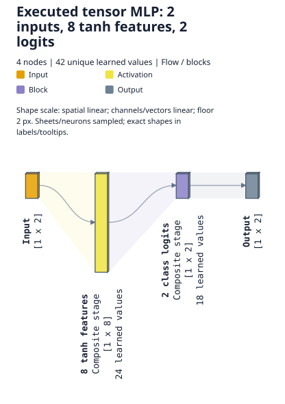
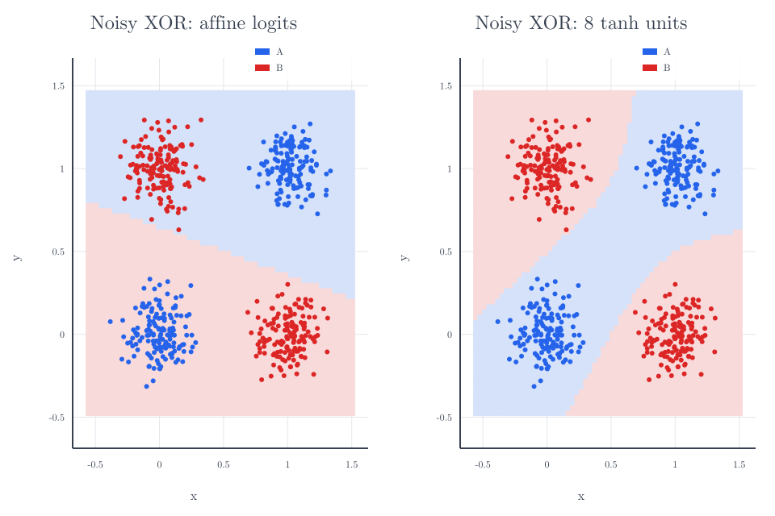
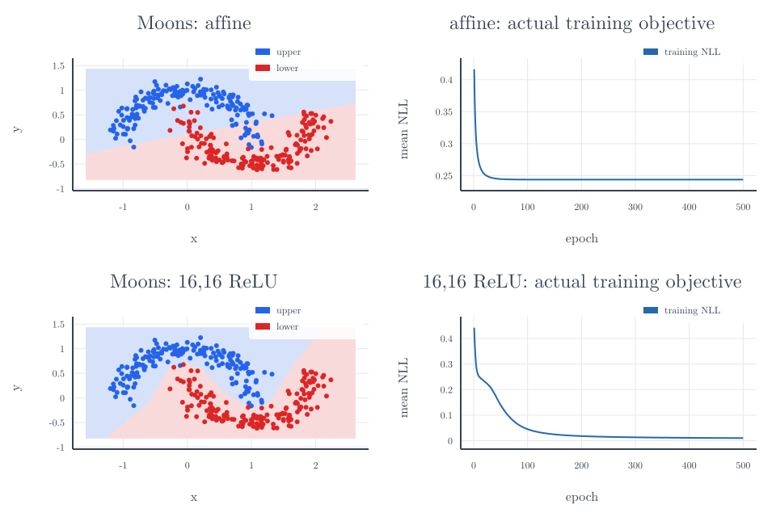
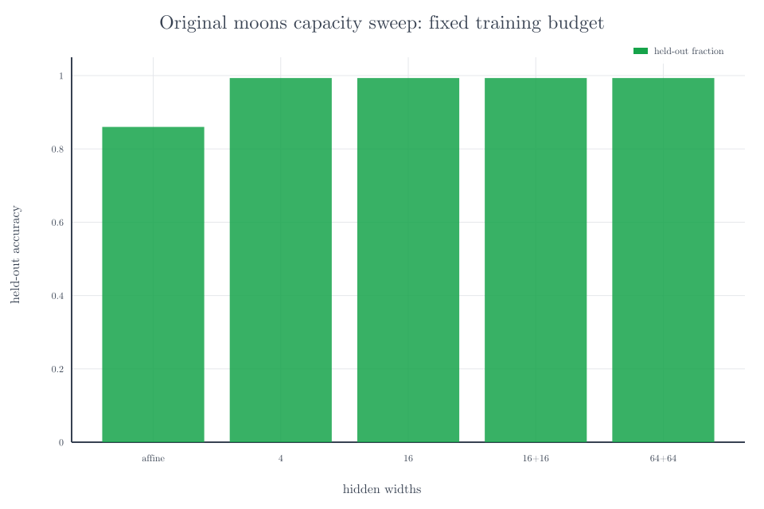
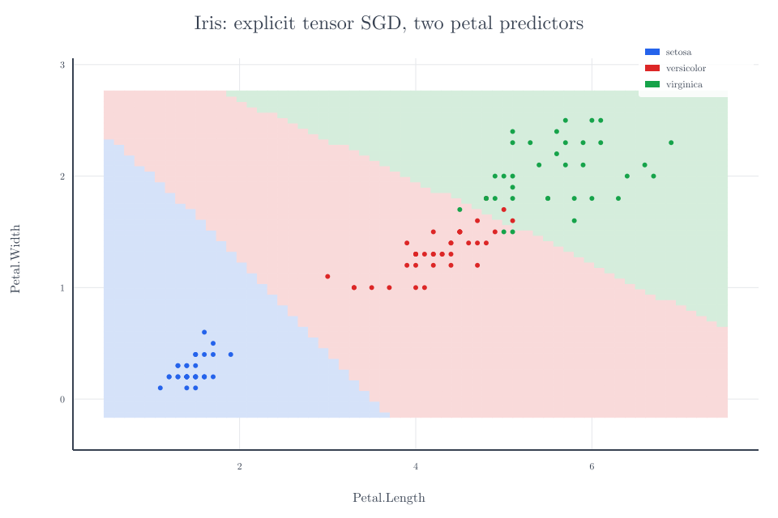
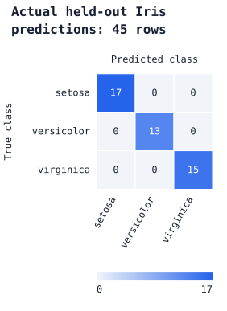

Multilayer perceptrons: nonlinear classification
Abstract
Learn nonlinear classification boundaries with dense tensor layers and a visible optimizer loop. The original noisy XOR, two-moons, architecture sweep and two-predictor Iris studies are retained, with train-only standardization and freshly computed metrics. Actual held-out predictions supply an annotated confusion matrix, while small tensor examples explain why nonlinear hidden features change the function class.
Start with four hand-checkable XOR corners
For binary x and y, s=x+y takes values0,1,1,2. ReLU(s)−2ReLU(s−1) therefore returns0,1,1,0. This explicit tensor calculation illustrates a nonlinear feature construction without fitting. A single affine two-class decision rule cannot assign the two opposite pairs of exact corners different classes: their required half-plane inequalities contradict after summing opposite corners. This argument concerns the exact corners; it does not claim an exact50% ceiling on every finite noisy sample.
A dense hidden layer computes h=activation(XW+b); the output layer computes logits. Softmax turns logits into class probabilities, and sparse cross-entropy is the mean negative log probability assigned to the observed class. Backpropagation differentiates that scalar objective through all dense layers. The figure traces an actual2→8→2 tensor forward pass, with named layer boundaries and learnable leaves. ParameterStore initializes weights lazily; the warm-up pass creates every parameter before constructing an optimizer.
#include <dm/dm.hpp>
int main() {
namespace n = dm::nn;
std::filesystem::create_directories("build");
auto x = n::tensor({0, 0, 0, 1, 1, 0, 1, 1}, {4, 2});
auto s = n::sum(x, {1});
auto exact = n::relu(s) - 2 * n::relu(s - 1);
std::print("Exact tensor XOR values: {}.\n", exact.to_vector<int>());
n::ParameterStore parameters(7);
auto logits = [&](const n::Tensor& input) {
auto h = n::dense(parameters, "hidden", input, 8, n::Activation::Tanh);
h = n::model_stage("8 tanh features", input, h);
auto z = n::dense(parameters, "output", h, 2);
return n::model_stage("2 class logits", h, z);
};
auto graph = n::plot_model(
logits,
n::zeros({1, 2}),
{.title = "Executed tensor MLP: 2 inputs, 8 tanh features, 2 logits"});
std::print(
"Actual learnable scalar parameters: {}; traced count {}.\n",
parameters.count(),
graph.parameter_count());
graph.save_svg("build/neural_architecture.svg");
}Exact tensor XOR values: [0, 1, 1, 0]. Actual learnable scalar parameters: 42; traced count 42.

Forward equations and the backpropagated gradient
Use row-batched notation: H₀=X has B rows and d₀ predictors. Layer l has W_l of shape d_(l−1)×d_l and bias b_l of length d_l. Hidden layers compute Z_l=H_(l−1)W_l+1b_lᵀ and H_l=φ(Z_l). Output logits omit the hidden activation. ReLU(z)=max(0,z), tanh(z) and sigmoid(z)=1/(1+exp(−z)) supply different nonlinear features. Without an intervening nonlinearity, composing affine layers collapses to one affine map, regardless of their number.
For output logits z, softmax probability is p_k=exp(z_k−m)/Σ_j exp(z_j−m), where m=max_j z_j cancels algebraically while preventing positive exponent overflow. The mean objective is −Σ_i log p_(i,y_i)/B, evaluated by native stable sparse cross-entropy. Uniform predictions have loss log K; that is a reference value, not a universal lower bound. The sampled noisy XOR classes need not have exactly identical empirical centroids, so their optimal affine loss need not equal log2 exactly.
Differentiating log Σ_j exp(z_j)−z_y gives the output error Δ_L=(P−Y)/B, with one-hot Y. Applying the chain rule backward gives Δ_l=(Δ_(l+1)W_(l+1)ᵀ)⊙φ′(Z_l). Each layer then has ∇W_l=H_(l−1)ᵀΔ_l and ∇b_l=Σ_rowsΔ_l. The factor1/B is already in Δ_L and is not applied again. Native autograd implements this reuse of forward intermediates; report code does not implement a second backpropagation routine. ReLU uses derivative zero at its kink, while tanh′=1−tanh² and sigmoid′=sigmoid·(1−sigmoid).
The visible SGD call applies θ←θ−η∇θ to all learnable leaves. An optional kernel penalty λΣ_l||W_l||²/2 would add λW_l to each kernel gradient while leaving biases unpenalized; every study here sets λ=0. Full-batch XOR makes one update per epoch, while moons and Iris shuffle rows each epoch and retain the final incomplete batch. Epoch-end loss uses the complete training subset, so it differs from simply averaging unequal-sized batch losses. Finite-budget SGD does not certify a global optimum.
A sufficiently wide hidden layer with a suitable activation can approximate continuous functions on compact domains. This existence statement does not promise that a chosen width, finite sample or optimizer finds that approximation. Cybenko (1989), Approximation by superpositions of a sigmoidal function and Hornik (1991), Approximation capabilities of multilayer feedforward networks provide the original report's approximation context with those qualifications.
Retain the original600-point noisy XOR study
The native fixture retains150 points at each corner, MT19937_64 seed1, independent normal noise with SD0.12 and the original x-then-y draw order. We compare no hidden layer with8 tanh units, full-batch SGD at0.1 for800 updates, seed7 and no L2 penalty. This is a capacity experiment: every observation is a training observation. The full-data standardization is consequently fitted only to that training set. Neither accuracy nor a region plot here is an estimate of held-out generalization.
The visible loop minimizes tensor sparse softmax cross-entropy. The native tensor initialization and optimizer replace the old constructor-based stats model, so old frozen losses and percentages are recomputed rather than asserted. Both classifiers receive identical standardized inputs and training budgets. The two decision panels use raw x/y coordinates; the callback applies the frozen training statistics before tensor inference.
#include <dm/dm.hpp>
int main() {
namespace n = dm::nn;
namespace study = n::study;
n::set_num_threads(2);
std::filesystem::create_directories("build");
auto data = study::xor_classification_data();
auto scaling = study::fit_tabular_standardization(data.features);
auto x = study::transform_tabular_features(data.features, scaling);
auto layout = dm::graphics::RLayout::create(1, 2);
std::print(
"| hidden units | scalar parameters | actual updates | training accuracy | final training "
"NLL |\n| ---: | ---: | ---: | ---: | ---: |\n");
for (int width : {0, 8}) {
n::ParameterStore parameters(7);
auto logits = [&](const n::Tensor& input) {
auto h = width ? n::dense(parameters, "hidden", input, width, n::Activation::Tanh) : input;
return n::dense(parameters, "output", h, 2);
};
{
n::NoGradGuard guard;
logits(n::take_rows(x, {0}));
}
n::OptimizerConfig config;
config.kind = n::OptimizerKind::Sgd;
n::Optimizer optimizer(parameters, .1, config);
for (int step = 0; step < 800; ++step) {
auto objective = n::sparse_softmax_cross_entropy(logits(x), data.labels);
optimizer.minimize(objective);
}
n::NoGradGuard guard;
auto z = logits(x);
std::print(
"| {} | {} | {} | {} | {} |\n",
width,
parameters.count(),
optimizer.iterations(),
n::accuracy(z, data.labels),
n::sparse_softmax_cross_entropy(z, data.labels).item());
auto plot = study::tabular_decision_regions(
data.features, data.labels, data.classes, [&](const auto& raw) {
return logits(study::transform_tabular_features(raw, scaling));
});
plot.title(width ? "Noisy XOR: 8 tanh units" : "Noisy XOR: affine logits")
.x_label("x")
.y_label("y");
layout.add(plot);
}
layout.fit_panels().save_svg("build/neural_xor.svg");
}| hidden units | scalar parameters | actual updates | training accuracy | final training NLL |
|---|---|---|---|---|
| 0 | 6 | 800 | 0.5 | 0.6930927634239197 |
| 8 | 42 | 800 | 1 | 0.018618877977132797 |

Retain the two interleaving moons and its held-out split
The native generator preserves250 observations per class, angular endpoints0 andπ, noise SD0.12, MT19937_64 seed3 and the original interleaved draw order. A seed11 row shuffle reserves350 training rows and150 held-out rows, without stratification. Only the350 training rows determine the column means and population SDs. Both subsets use those frozen values.
Compare affine logits with two ReLU layers of16 units. Each model uses SGD at0.05 for500 epochs, shuffled batches of32 with seed5, and no weight penalty. Eleven batches per epoch include the final30 rows, giving5500 updates. Model initialization also uses seed5. The layout contains both actual fitted regions and each actual epoch-end training loss; the held-out labels never enter the objective or a checkpoint decision. A fixed split is one finite generalization assessment, not a calibrated uncertainty interval.
#include <dm/dm.hpp>
int main() {
namespace n = dm::nn;
namespace study = n::study;
n::set_num_threads(2);
std::filesystem::create_directories("build");
auto data = study::moon_classification_data();
auto split = study::tabular_classification_split(data.features.size(0), .7, 11);
auto raw = n::take_rows(data.features, split.training),
ty = n::take_rows(data.labels, split.training),
vy = n::take_rows(data.labels, split.heldout);
auto scaling = study::fit_tabular_standardization(raw);
auto tx = study::transform_tabular_features(raw, scaling),
vx = study::transform_tabular_features(n::take_rows(data.features, split.heldout), scaling);
auto layout = dm::graphics::RLayout::create(2, 2);
std::print(
"| model | parameters | updates | held-out correct fraction | held-out NLL |\n| --- | ---: | "
"---: | ---: | ---: |\n");
for (bool hidden : {false, true}) {
n::ParameterStore parameters(5);
auto logits = [&](const n::Tensor& input) {
auto h = hidden ? n::mlp(parameters, "hidden", input, {16, 16}, n::Activation::Relu) : input;
return n::dense(parameters, "output", h, 2);
};
{
n::NoGradGuard guard;
logits(n::take_rows(tx, {0}));
}
n::OptimizerConfig config;
config.kind = n::OptimizerKind::Sgd;
n::Optimizer optimizer(parameters, .05, config);
n::BatchOrder batches(tx.size(0), 32, 5);
std::vector<double> epoch, loss;
for (int e = 0; e < 500; ++e) {
batches.begin_epoch();
for (auto rows = batches.next(); !rows.empty(); rows = batches.next()) {
auto objective =
n::sparse_softmax_cross_entropy(logits(n::take_rows(tx, rows)), n::take_rows(ty, rows));
optimizer.minimize(objective);
}
n::NoGradGuard guard;
epoch.push_back(e + 1);
loss.push_back(n::sparse_softmax_cross_entropy(logits(tx), ty).item());
}
n::NoGradGuard guard;
auto z = logits(vx);
std::string name = hidden ? "16,16 ReLU" : "affine";
std::print(
"| {} | {} | {} | {} | {} |\n",
name,
parameters.count(),
optimizer.iterations(),
n::accuracy(z, vy),
n::sparse_softmax_cross_entropy(z, vy).item());
auto regions = study::tabular_decision_regions(raw, ty, data.classes, [&](const auto& q) {
return logits(study::transform_tabular_features(q, scaling));
});
regions.title("Moons: " + name).x_label("x").y_label("y");
layout.add(regions);
auto curve = dm::graphics::RPlot::create();
curve.lines(epoch, loss, "training NLL", {36, 105, 172})
.title(name + ": actual training objective")
.x_label("epoch")
.y_label("mean NLL");
layout.add(curve);
}
layout.fit_panels().save_svg("build/neural_moons.svg");
}| model | parameters | updates | held-out correct fraction | held-out NLL |
|---|---|---|---|---|
| affine | 6 | 5500 | 0.86 | 0.3052326440811157 |
| 16,16 ReLU | 354 | 5500 | 0.9933333333333333 | 0.008374613709747791 |

Preserve the architecture sweep, with an explicit selection caveat
The original five architectures are affine,4,16,16+16 and64+64 hidden units, all using ReLU where hidden layers exist. The same350/150 split and500-epoch SGD schedule are retained. Actual ParameterStore counts accompany the freshly computed held-out accuracy. More parameters enlarge the function class but do not guarantee better optimization or held-out performance. Because this sweep repeatedly inspects the same held-out set, using it to choose an architecture would make that set a validation set; a new test set or nested validation would be required for an unbiased final selected-model assessment.
#include <dm/dm.hpp>
int main() {
namespace n = dm::nn;
namespace study = n::study;
n::set_num_threads(2);
std::filesystem::create_directories("build");
auto data = study::moon_classification_data();
auto split = study::tabular_classification_split(data.features.size(0), .7, 11);
auto scaling = study::fit_tabular_standardization(n::take_rows(data.features, split.training));
auto tx = study::transform_tabular_features(n::take_rows(data.features, split.training), scaling),
vx = study::transform_tabular_features(n::take_rows(data.features, split.heldout), scaling),
ty = n::take_rows(data.labels, split.training),
vy = n::take_rows(data.labels, split.heldout);
std::vector<std::vector<std::int64_t>> architectures{{}, {4}, {16}, {16, 16}, {64, 64}};
std::vector<std::string> names{"affine", "4", "16", "16+16", "64+64"};
std::vector<double> scores;
std::print(
"| hidden architecture | actual parameters | actual updates | held-out accuracy |\n| --- | "
"---: | ---: | ---: |\n");
for (std::size_t a = 0; a < architectures.size(); ++a) {
n::ParameterStore parameters(5);
auto logits = [&](const n::Tensor& x) {
auto h = n::mlp(parameters, "hidden", x, architectures[a], n::Activation::Relu);
return n::dense(parameters, "output", h, 2);
};
{
n::NoGradGuard guard;
logits(n::take_rows(tx, {0}));
}
n::OptimizerConfig config;
config.kind = n::OptimizerKind::Sgd;
n::Optimizer optimizer(parameters, .05, config);
n::BatchOrder batches(tx.size(0), 32, 5);
for (int e = 0; e < 500; ++e) {
batches.begin_epoch();
for (auto rows = batches.next(); !rows.empty(); rows = batches.next()) {
auto objective =
n::sparse_softmax_cross_entropy(logits(n::take_rows(tx, rows)), n::take_rows(ty, rows));
optimizer.minimize(objective);
}
}
n::NoGradGuard guard;
double acc = n::accuracy(logits(vx), vy);
scores.push_back(acc);
std::print(
"| {} | {} | {} | {} |\n", names[a], parameters.count(), optimizer.iterations(), acc);
}
auto plot = dm::graphics::RPlot::barplot(scores, names, "held-out fraction");
plot.title("Original moons capacity sweep: fixed training budget")
.x_label("hidden widths")
.y_label("held-out accuracy")
.y_limits(0, 1.05)
.save_svg("build/neural_capacity.svg");
}| hidden architecture | actual parameters | actual updates | held-out accuracy |
|---|---|---|---|
| affine | 6 | 5500 | 0.86 |
| 4 | 22 | 5500 | 0.9933333333333333 |
| 16 | 82 | 5500 | 0.9933333333333333 |
| 16+16 | 354 | 5500 | 0.9933333333333333 |
| 64+64 | 4482 | 5500 | 0.9933333333333333 |

Iris with exactly two measured predictors
The bundled150-row Iris dataset contributes only Petal.Length and Petal.Width. A seed2024 shuffle retains the original105/45 training/held-out split. Training-only standardization,16 ReLU units, SGD at0.05,600 epochs, batches32, initializer/batch seed42 and no L2 penalty are explicit. Four batches per epoch include the final9 rows, producing2400 updates. The16-unit model has99 scalar parameters:2·16+16+16·3+3.
The decision grid is evaluated in raw petal units through the fitted tensor model and frozen training statistics. Colored points are training observations; the reported NLL and accuracy use only the45 held-out observations. This is one fixed architecture, not Bayesian hyperparameter tuning. The independent README binding demonstration remains a separate study.
#include <dm/dm.hpp>
int main() {
namespace n = dm::nn;
namespace study = n::study;
n::set_num_threads(2);
std::filesystem::create_directories("build");
auto data = study::iris_petal_classification_data();
auto split = study::tabular_classification_split(data.features.size(0), .7, 2024);
auto raw = n::take_rows(data.features, split.training),
ty = n::take_rows(data.labels, split.training),
vy = n::take_rows(data.labels, split.heldout);
auto scaling = study::fit_tabular_standardization(raw);
auto tx = study::transform_tabular_features(raw, scaling),
vx = study::transform_tabular_features(n::take_rows(data.features, split.heldout), scaling);
n::ParameterStore parameters(42);
auto logits = [&](const n::Tensor& input) {
auto h = n::dense(parameters, "hidden", input, 16, n::Activation::Relu);
return n::dense(parameters, "output", h, 3);
};
{
n::NoGradGuard guard;
logits(n::take_rows(tx, {0}));
}
n::OptimizerConfig config;
config.kind = n::OptimizerKind::Sgd;
n::Optimizer optimizer(parameters, .05, config);
n::BatchOrder batches(tx.size(0), 32, 42);
for (int e = 0; e < 600; ++e) {
batches.begin_epoch();
for (auto rows = batches.next(); !rows.empty(); rows = batches.next()) {
auto objective =
n::sparse_softmax_cross_entropy(logits(n::take_rows(tx, rows)), n::take_rows(ty, rows));
optimizer.minimize(objective);
}
}
n::NoGradGuard guard;
auto z = logits(vx);
std::print(
"Training rows {}, held-out rows {}, features {}, parameters {}, updates {}.\n\nHeld-out "
"accuracy {}; NLL {}.\n",
tx.size(0),
vx.size(0),
tx.size(1),
parameters.count(),
optimizer.iterations(),
n::accuracy(z, vy),
n::sparse_softmax_cross_entropy(z, vy).item());
auto plot = study::tabular_decision_regions(raw, ty, data.classes, [&](const auto& q) {
return logits(study::transform_tabular_features(q, scaling));
});
plot.title("Iris: explicit tensor SGD, two petal predictors")
.x_label(data.predictors[0])
.y_label(data.predictors[1])
.save_svg("build/neural_iris.svg");
}Training rows 105, held-out rows 45, features 2, parameters 99, updates 2400.
Held-out accuracy 1; NLL 0.03770553693175316.

Inspect the actual held-out confusion matrix
The complete program below independently reproduces the same seeded fit and sends its actual held-out truth IDs and argmax logits to ConfusionMatrix. Rows run from true class top to bottom; columns run from predicted class left to right. Cells show raw integer counts, with no normalization or ignored labels. Their total is45. Unlike the original training-only confusion summary, this image directly accompanies the held-out metrics.
#include <dm/dm.hpp>
int main() {
namespace n = dm::nn;
namespace study = n::study;
n::set_num_threads(2);
std::filesystem::create_directories("build");
auto data = study::iris_petal_classification_data();
auto split = study::tabular_classification_split(data.features.size(0), .7, 2024);
auto raw = n::take_rows(data.features, split.training),
ty = n::take_rows(data.labels, split.training),
vy = n::take_rows(data.labels, split.heldout);
auto scaling = study::fit_tabular_standardization(raw);
auto tx = study::transform_tabular_features(raw, scaling),
vx = study::transform_tabular_features(n::take_rows(data.features, split.heldout), scaling);
n::ParameterStore parameters(42);
auto logits = [&](const n::Tensor& input) {
auto h = n::dense(parameters, "hidden", input, 16, n::Activation::Relu);
return n::dense(parameters, "output", h, 3);
};
{
n::NoGradGuard guard;
logits(n::take_rows(tx, {0}));
}
n::OptimizerConfig config;
config.kind = n::OptimizerKind::Sgd;
n::Optimizer optimizer(parameters, .05, config);
n::BatchOrder batches(tx.size(0), 32, 42);
for (int e = 0; e < 600; ++e) {
batches.begin_epoch();
for (auto rows = batches.next(); !rows.empty(); rows = batches.next()) {
auto objective =
n::sparse_softmax_cross_entropy(logits(n::take_rows(tx, rows)), n::take_rows(ty, rows));
optimizer.minimize(objective);
}
}
n::NoGradGuard guard;
auto z = logits(vx);
std::print(
"Training rows {}, held-out rows {}, features {}, parameters {}, updates {}.\n\nHeld-out "
"accuracy {}; NLL {}.\n",
tx.size(0),
vx.size(0),
tx.size(1),
parameters.count(),
optimizer.iterations(),
n::accuracy(z, vy),
n::sparse_softmax_cross_entropy(z, vy).item());
n::ConfusionMatrix matrix(3);
matrix.add(vy, n::argmax(z, 1));
matrix.save_svg(
"build/neural_confusion.svg",
{.title = "Actual held-out Iris predictions: 45 rows", .labels = data.classes});
std::print(
"| true class | predicted setosa | predicted versicolor | predicted virginica |\n| --- | "
"---: | ---: | ---: |\n");
for (std::size_t c = 0; c < data.classes.size(); ++c)
std::print(
"| {} | {} | {} | {} |\n",
data.classes[c],
matrix.cells()[c][0],
matrix.cells()[c][1],
matrix.cells()[c][2]);
}Training rows 105, held-out rows 45, features 2, parameters 99, updates 2400.
Held-out accuracy 1; NLL 0.03770553693175316.
| true class | predicted setosa | predicted versicolor | predicted virginica |
|---|---|---|---|
| setosa | 17 | 0 | 0 |
| versicolor | 0 | 13 | 0 |
| virginica | 0 | 0 | 15 |

Cost, limitations and references
For layer widths d₀,…,d_L and batch size B, dense forward/backward work is O(BΣd_(l−1)d_l). Parameters require Σ(d_(l−1)+1)d_l scalars; activation and gradient storage depend on batch width. SGD retains no Adam moment arrays. Multiple classes use coupled softmax logits rather than independently thresholded scores. Hidden nonlinearities change representational capacity; they do not make the nonconvex training objective globally solvable or ensure calibrated probabilities. The reported loss is unpenalized mean training NLL, and the stated finite budgets determine when fitting stops.
Every fit, objective, preprocessing step and inference uses native dm::nn tensors. Canonical helpers own deterministic data generation, the seeded row split, frozen tensor standardization and decision-grid plotting; the optimizer loops remain editable in this report. No held-out values determine standardization or update parameters. Fixed seeds support local repeatability, while floating arithmetic and native tensor initialization need not reproduce the removed stats-model tables bit for bit.
Rumelhart, Hinton and Williams (1986), Learning representations by back-propagating errors explains the gradient-learning mechanism. Glorot and Bengio (2010), Understanding the difficulty of training deep feedforward neural networks motivates variance-aware initialization. Fisher (1936), The use of multiple measurements in taxonomic problems provides the Iris classification context; the two-variable restriction here is deliberate for interpretable figures.
Verification
This ten-report batch passes76 CTest cases,22 directly instrumented ASan/UBSan cases,119 compiled and executed public examples,513/513 scoped documentation definitions and ten representative clangd hovers. Independent Python Fraction arithmetic and likelihood/mass reconstruction verify5266 captured records with43990 checks, including the original Gaussian controls. Frozen valid-input comparisons cover DFA quotients, byte recoding, event streams, interpolation, tours, alignments, real-root paths, packing and nested-sampling trajectories. Ten checkout headers and ten byte-identical installed development headers compile independently; an installed-header native consumer links and runs. The batch has42 executed complete programs and42 visually reviewed native figures, with HTML/Markdown result and image-byte checks. These are scoped native checks, not an installation claim for every language binding. Receipts: build/mepml-conversion/batch-244-253/.